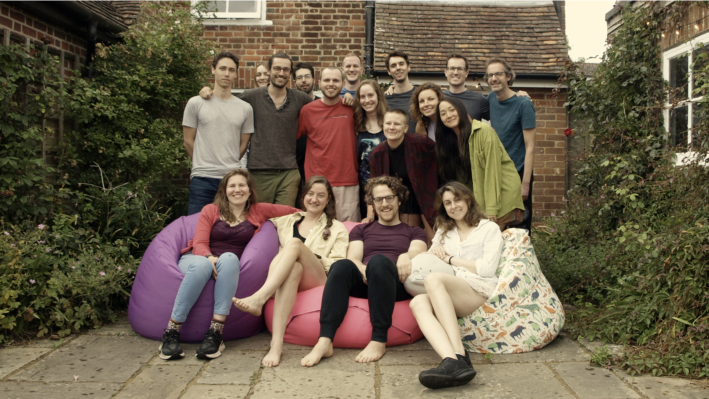

doing good with
wisdom & rationality
integral altruism integrates effective altruism with other changemaking traditions, like wisdom, systems thinking, metarationality, metamodernism.
integral altruism integrates effective altruism with other changemaking traditions, like wisdom, systems thinking, metarationality, metamodernism.
Integral altruism (int/a) aims to integrate effective altruism (EA) with other changemaking memeplexes. We're interested in frames and tools that counterbalance the blindspots of EA, like wisdom, systems thinking, metarationality, and metamodernism.
Our goals are the same, to do the most good, but also to break free from the underlying implicit and explicit assumptions of the current EA movement (like classical utilitarianism, naive rationalism and techno-solutionism).
We believe this integration is necessary to solve the world's most complex & pressing problems under radical uncertainty.
Check out our principles here.
We're running a number of community-building experiments, including residential retreats, an online speaker series, and regular in-person gatherings in London, Berlin, and Paris. We're also testing out ways to create space for new ideas to emerge like hackathons, conferences, and practice circles.
To learn more, check out our substack. To get involved, express interest here.
